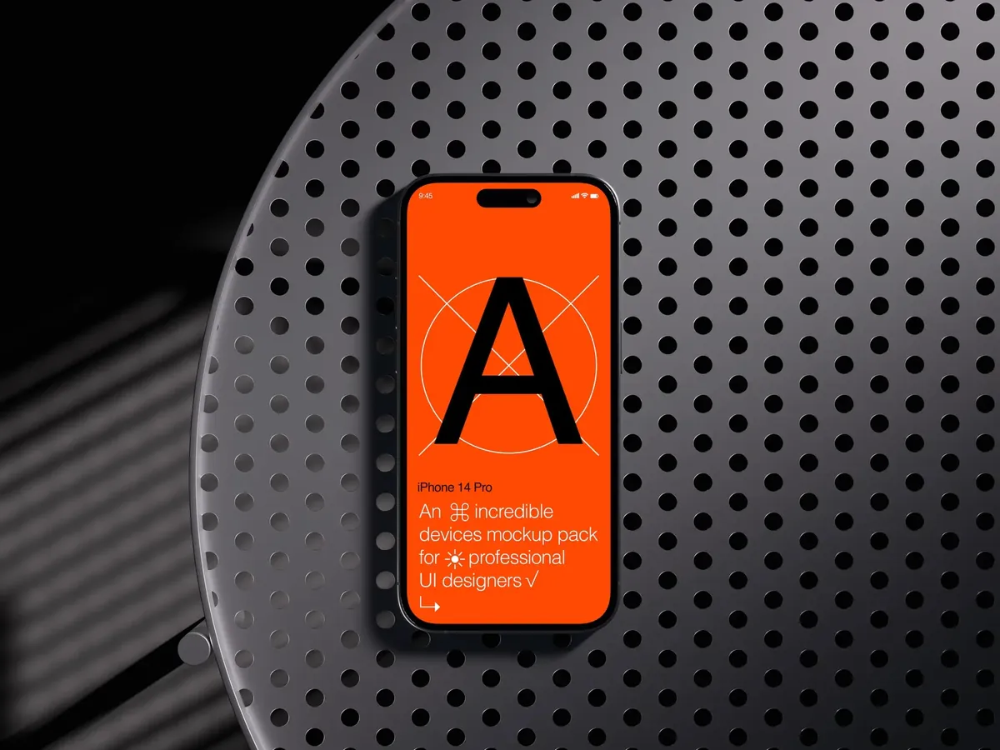

case study · 3 min read
Collaborative Learning App Design
Transforming remote education into engaging peer-to-peer study sessions with real-time whiteboards and collaborative problem-solving.

Problem statement
The isolation of digital learning environments
Online learning often feels passive and one-directional. Students listening to recorded lectures or reading dense textbooks experience high cognitive fatigue and lack the spontaneous peer collaboration found in physical classrooms.
For this graduation capstone project, I explored how lightweight digital tools could foster authentic collaborative problem-solving between study partners without distracting from course material.
The final product
Real-time study pods and persistent whiteboard canvas
- Synchronized Study Pods: Micro-rooms for 2-4 peers with shared timers, audio channels, and distraction blockers.
- Interactive Shared Canvas: Math formula and diagramming tools that let students solve problems side-by-side in real time.
- Peer Knowledge Exchange: Structured Q&A cards allowing group members to upvote answers and bookmark breakthroughs.